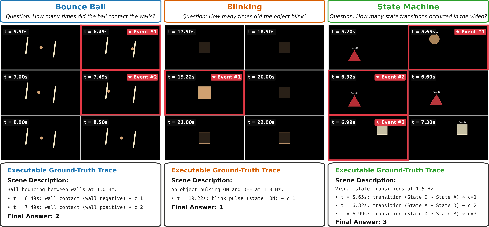
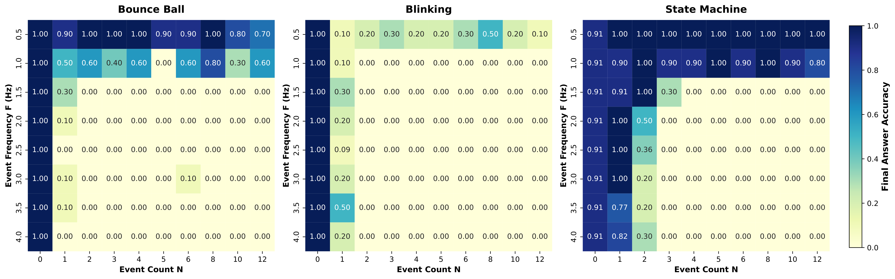
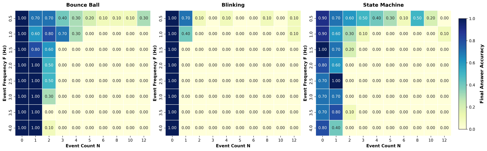
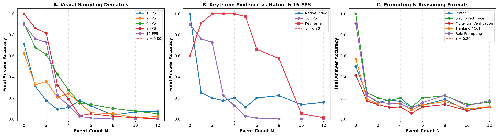
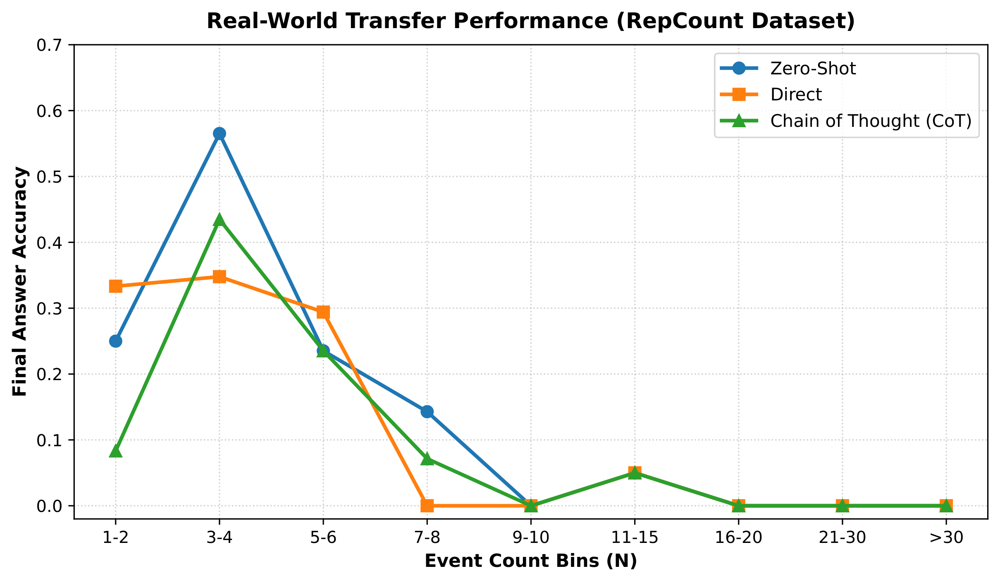

Figure 1: EventLapse paradigm and the Low-Frequency Trap. Real-world benchmarks entangle visual complexity with event dynamics, hiding failure causes. EventLapse isolates event count (N) and event frequency (F) across three controlled tasks: bouncing balls (transient wall contacts), blinking lights (transient visual flashes), and state machine indicators (persistent state changes). Paired with executable ground-truth traces, EventLapse evaluates both the final count and event-by-event temporal execution.
Abstract
Real-world video benchmarks provide broad coverage, but their fixed clips entangle event count, rate, duration, and visual complexity, making failure modes hard to isolate. While existing programmatic benchmarks offer better control, they primarily score only the final answer rather than auditing reported events against executable ground truth.
To bridge this gap, we introduce trace-grounded parametric profiling for event counting in three controlled video tasks: bouncing-ball wall contacts, visual blinks, and categorical state transitions. Across 2,190 videos, we systematically vary event count (N) and frequency (F) while holding rendering fixed. Each video includes an executable event trace for capability-surface estimation and timestamp-level evaluation.
Our results reveal a staged temporal failure: at an 80% reliability threshold, Gemini 3.6 Flash reliably counts persistent state transitions up to 12 events at 0.5 and 1.0 Hz, yet demonstrates no reliable positive-count region for transient blinking events. Thus, event representation (persistent vs. transient) dictates whether a model initially accesses evidence—a limitation that compounds as count and frequency increase. In high-count, high-frequency regimes, only 0.2% of final counts are correct and models recover just 18.1% of true events. Furthermore, increasing sampling rate boosts Bounce Ball final accuracy from 19.6% to 29.3%, yet reported sequences agree with ground truth only 3.7% of the time, proving that extra frames inflate final scores without producing faithful event recovery.
The EventLapse Framework

Figure 2: EventLapse tasks and trace-grounded evaluation. Controlled synthetic videos generated across three task domains: Bounce Ball (wall contact bookkeeping), Blinking (transient visual flashes), and State Machine (persistent state transitions). Each sample includes exact event timestamps, enabling evaluation of both final-answer correctness and step-by-step trace fidelity.
Empirical Capability Surfaces


Figure 3: Capability surface heatmaps across N × F space for frontier VLMs. Reliability boundaries for Gemini 3.6 Flash (top) and Qwen 3 VL 235B Instruct (bottom) across event count (N = 1..12) and frequency (F = 0.1..2.0 Hz). Persistent state transitions remain reliable (accuracy ≥ 80%) up to high event counts, whereas transient blinking events demonstrate early failure boundaries even at low event loads.
Diagnostic Interventions

Figure 4: Frame density, keyframes, and prompt interventions. Increasing sampling rate (e.g. from 1 fps to 4 fps) improves final-answer accuracy on Bounce Ball from 19.6% to 29.3%. However, auditing reported timestamp traces reveals that trace agreement remains at a dismal 3.7%. Extra frames allow models to guess final counts better without executing faithful temporal bookkeeping.
Real-World Transfer

Figure 5: Transfer evaluation on natural videos. Testing models on natural repeated-event videos confirms that performance degradation concentrates at high event counts, validating that controlled synthetic findings reflect real-world video-language capabilities.
Qualitative Examples
Faithful Event Recovery (Correct Match)
Bounce Ball (N=5, F=1.0Hz)BibTeX Citation
If you find our work or the EventLapse benchmark useful in your research, please cite:
@article{baskar2026lowfrequencytrap,
title={The Low-Frequency Trap: Video--Language Models Fail at Simple Event Bookkeeping},
author={Baskar, Sarvesh and Cai, Zikui and Shabihi, Shayan and Satheesh, Anirudh and Islam, Muhammad R. and Sewwog, Udari Madhushani and Goldstein, Tom and Huang, Furong},
journal={arXiv preprint},
year={2026}
}